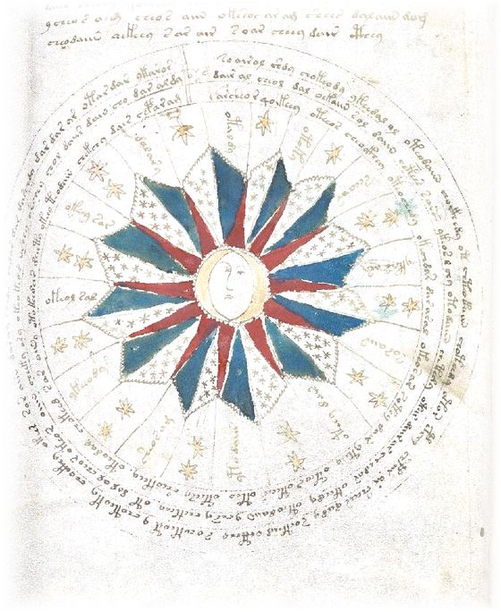

Read a manuscript
Load the manuscript file and give the key it was written with: the text comes back exactly as it went in, letter for letter. With any other key there is nothing to read.
Sharpening the quill…
Load the manuscript file and give the key it was written with: the text comes back exactly as it went in, letter for letter. With any other key there is nothing to read.
Sharpening the quill…
